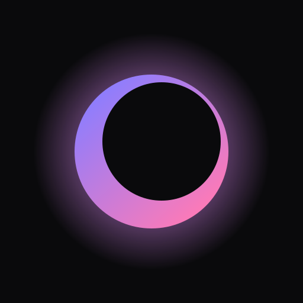

Luma
iPhone
How to install
- Download Luma.ipa.
- Install it with a sideloading app, which signs it for you: Signulous lasts a year; AltStore, SideStore or Sideloadly work with a free Apple ID but re-sign every 7 days.
- Open Luma from your Home Screen.
Windows
Windows protected your PC?
- Luma.exe isn't signed, so SmartScreen stops it the first time.
- Click More info, then Run anyway.